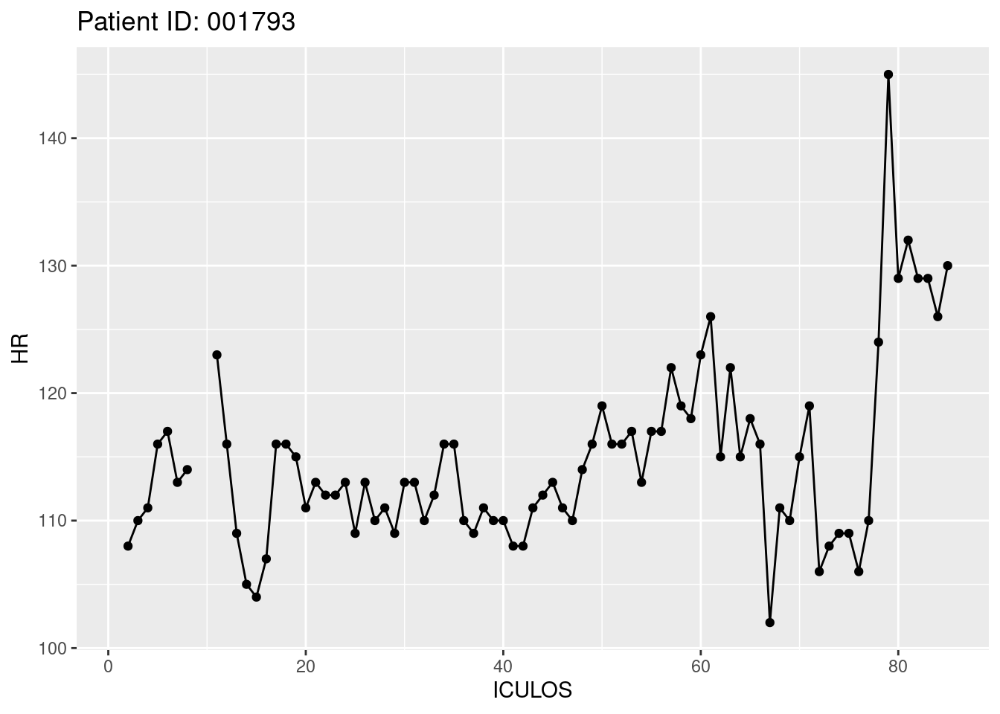
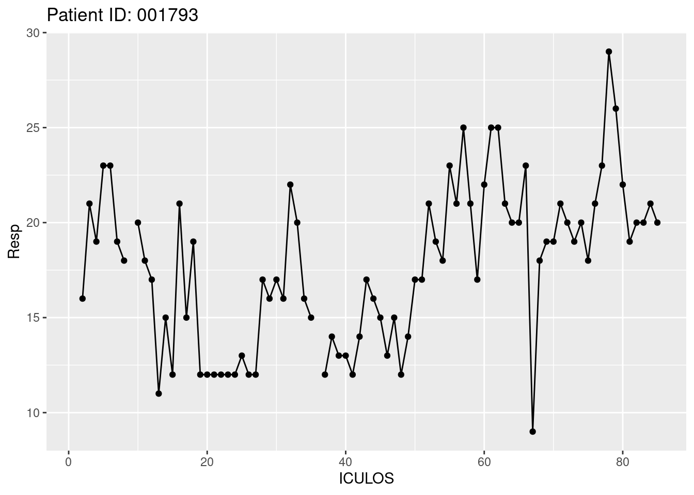
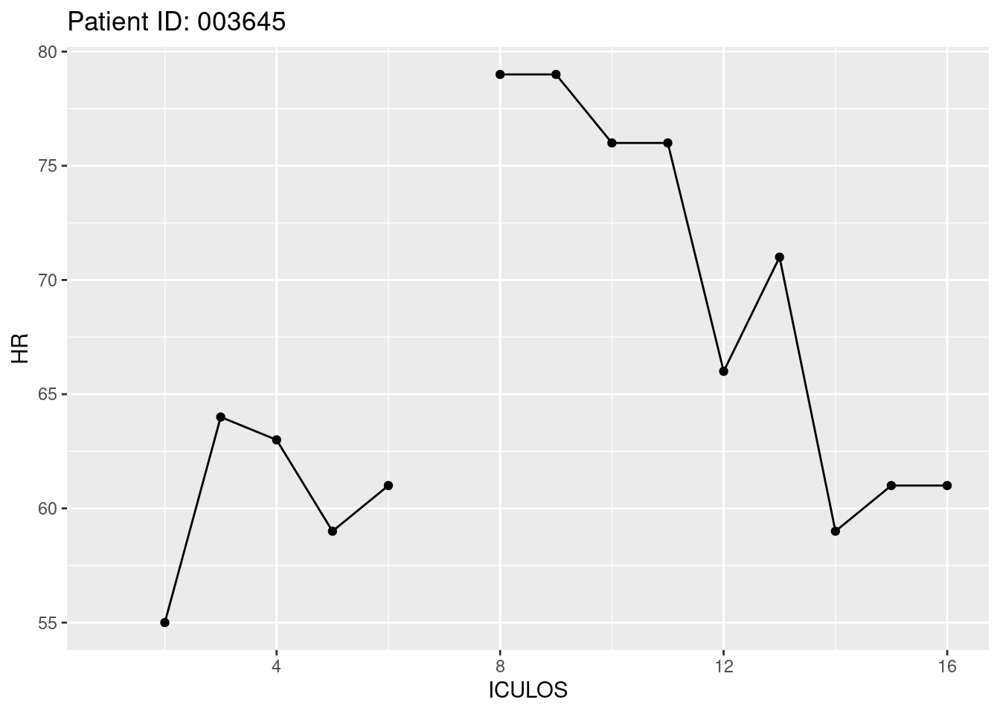
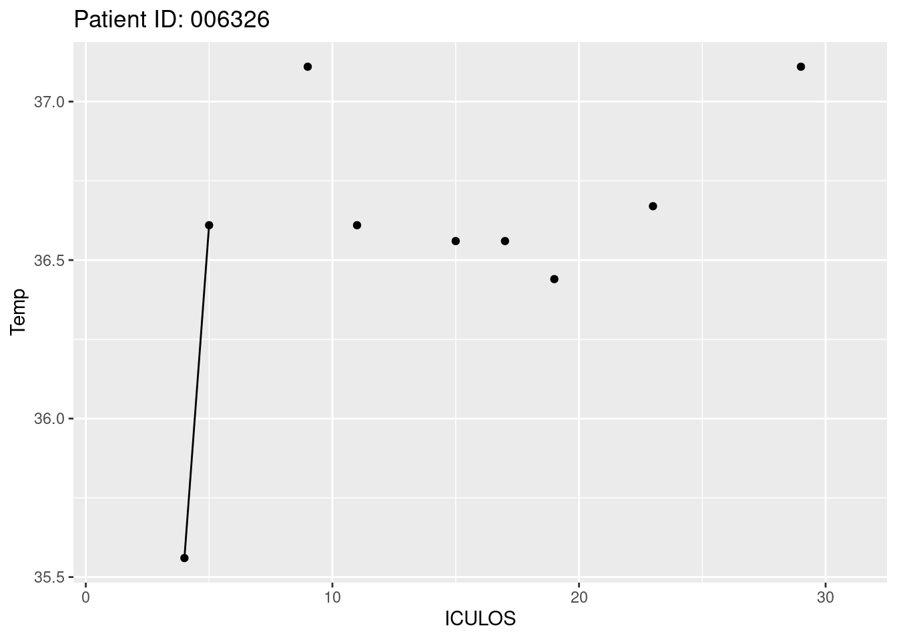
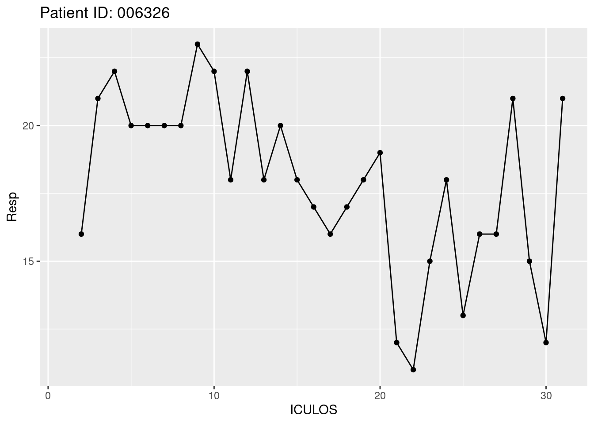
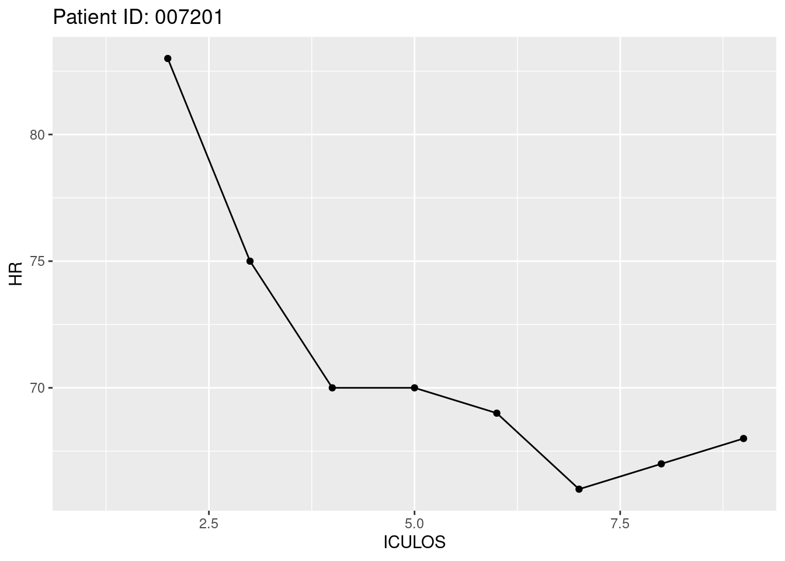

#Table 1
sepsis %>% filter(SepsisLabel==1) %>%
select(-ICULOS, -SepsisLabel, -obsTime) %>%
knitr::kable()| PatientID | HR | Temp | Resp |
|---|---|---|---|
| 003645 | 61 | NA | 18 |
| 006326 | 94 | NA | 18 |
| 006476 | 97 | NA | 16 |
| 007201 | 68 | NA | 12 |
| 007826 | 98 | NA | 25 |
Table of all patients with sepsis and their vital signs:
#Table 1
sepsis %>% filter(SepsisLabel==1) %>%
select(-ICULOS, -SepsisLabel, -obsTime) %>%
knitr::kable()| PatientID | HR | Temp | Resp |
|---|---|---|---|
| 003645 | 61 | NA | 18 |
| 006326 | 94 | NA | 18 |
| 006476 | 97 | NA | 16 |
| 007201 | 68 | NA | 12 |
| 007826 | 98 | NA | 25 |
The changes in parameters in all patients with sepsis over the last hour:
new_data %>%
group_by(PatientID) %>%
arrange(desc(ICULOS))%>%
slice(1:2)%>%
ungroup()%>%
mutate(no=c(rep(c(2,1),50)))%>%
filter(SepsisLabel==1) %>%
pivot_wider(id_cols = "PatientID", names_from = "no",
values_from = c("HR", "Temp", "Resp"), names_prefix = "gr")%>%
mutate(HR_change=HR_gr2-HR_gr1, Temp_change=Temp_gr2-Temp_gr1, Resp_change=Resp_gr2-Resp_gr1)%>%
select(PatientID, HR_change, Temp_change, Resp_change) %>%
knitr::kable()| PatientID | HR_change | Temp_change | Resp_change |
|---|---|---|---|
| 003645 | 0 | NA | 4 |
| 006326 | 3 | NA | 3 |
| 006476 | 1 | NA | 2 |
| 007201 | 1 | NA | 0 |
| 007826 | NA | NA | NA |
Plots of changes in parameters for all patients who currently have sepsis:
ids<- sepsis %>% filter(SepsisLabel==1) %>%
select(PatientID) %>%
unlist() %>%
unname()
for (i in ids) {
a<-getPatient(i)
title<-paste("Patient ID:", i)
print(ggplot(data=a, aes(x=ICULOS, y=HR, group=1)) +
geom_line()+
geom_point()+
ggtitle(title))
print(ggplot(data=a, aes(x=ICULOS, y=Temp, group=1)) +
geom_line()+
geom_point()+
ggtitle(title))
print(ggplot(data=a, aes(x=ICULOS, y=Resp, group=1)) +
geom_line()+
geom_point()+
ggtitle(title))
}







